High Tide Pools
A homepage for a pool service company, where every hover moves like water.
Web + interactive
> make a pool company's homepage feel like water, down to the hover
- Client
- High Tide Pools · Hardpart Media
- Role
- Wireframe, UX + UI, coded homepage
- Built with
- WireframeHTML / CSS / JSResponsiveMicro-interactions
Components
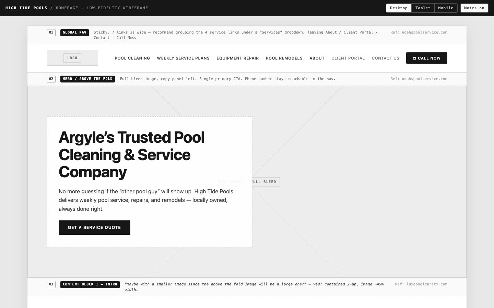
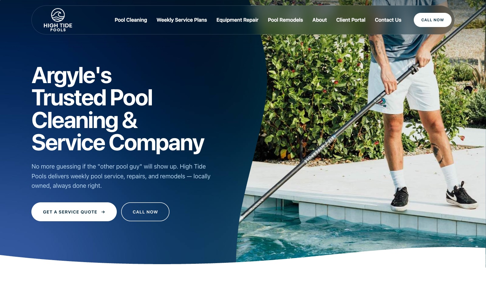
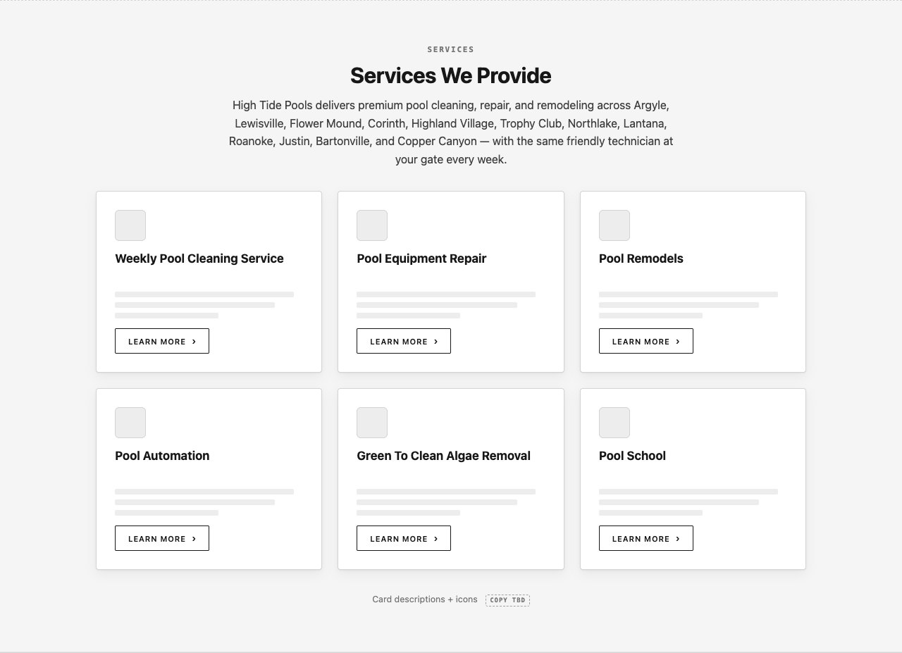
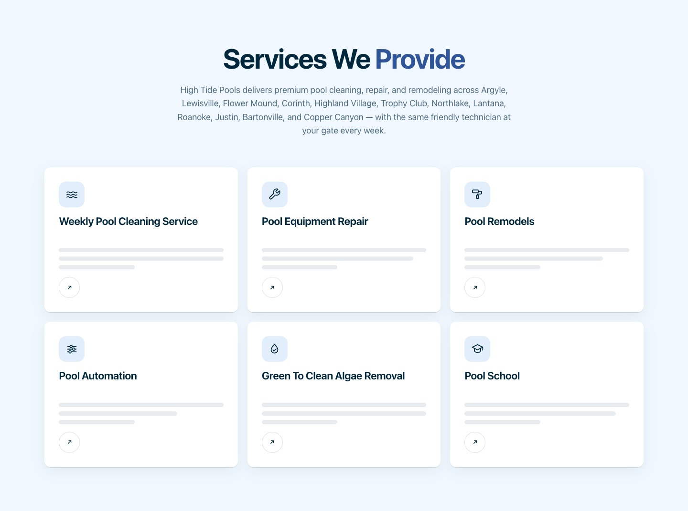
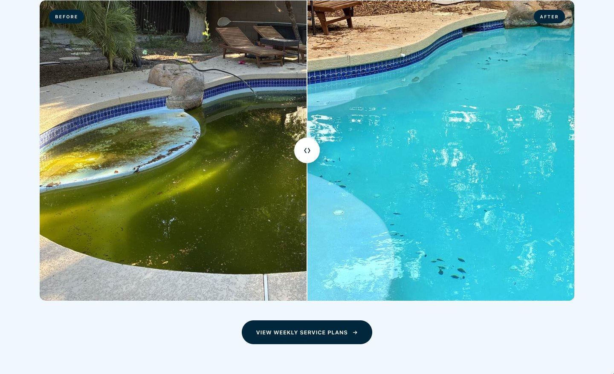
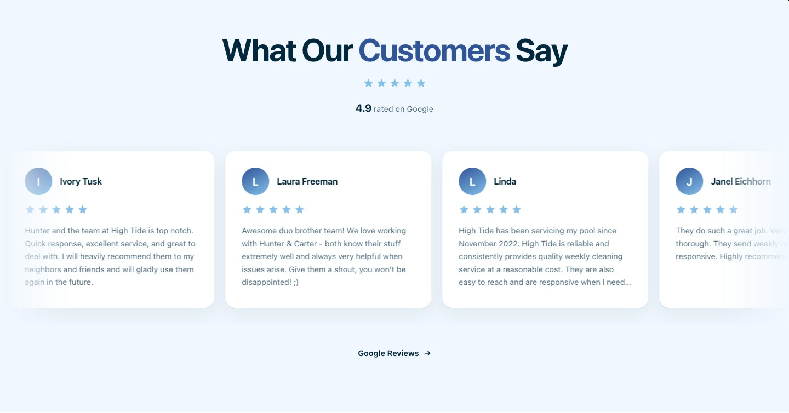
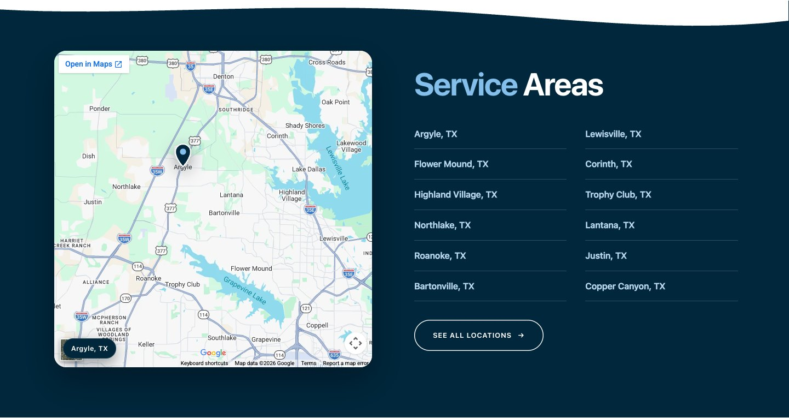
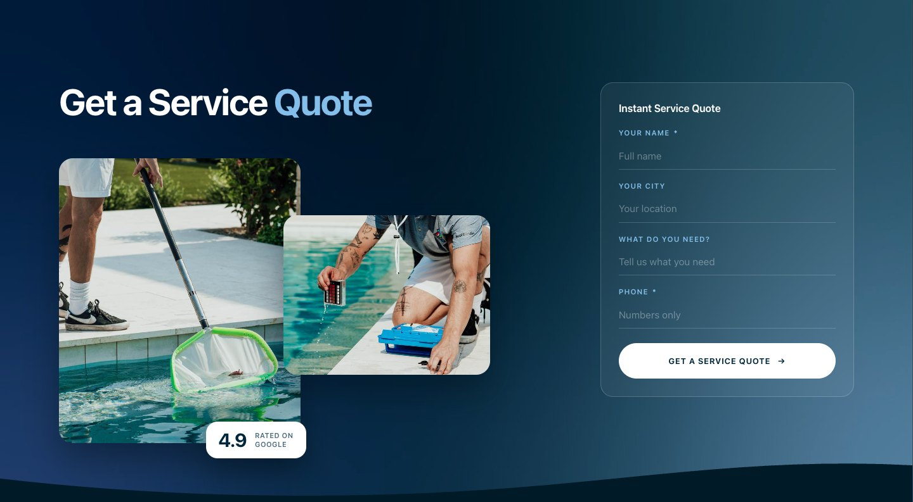
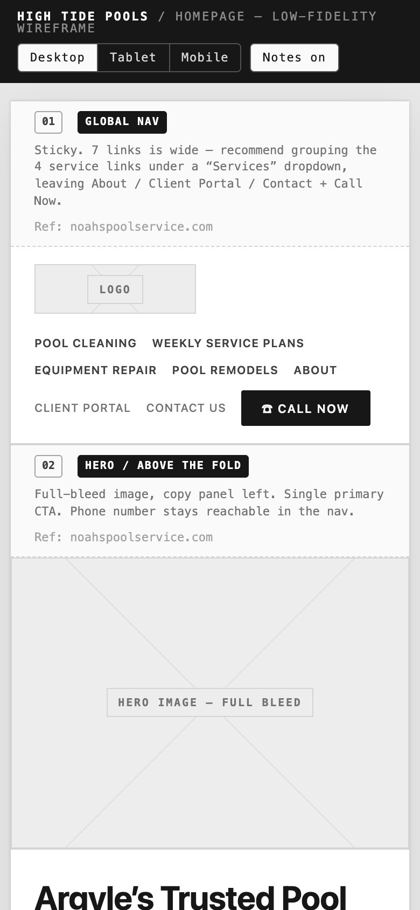
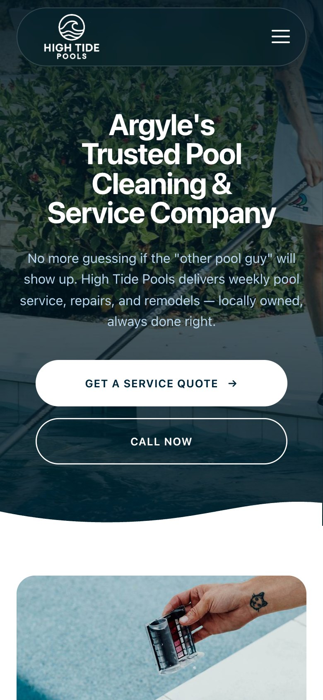
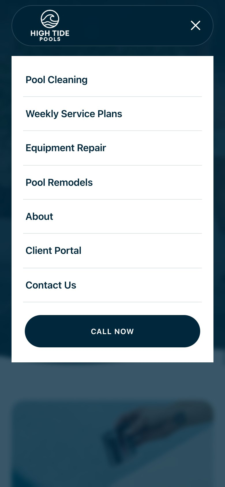
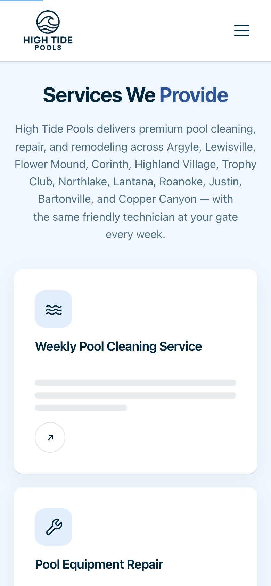